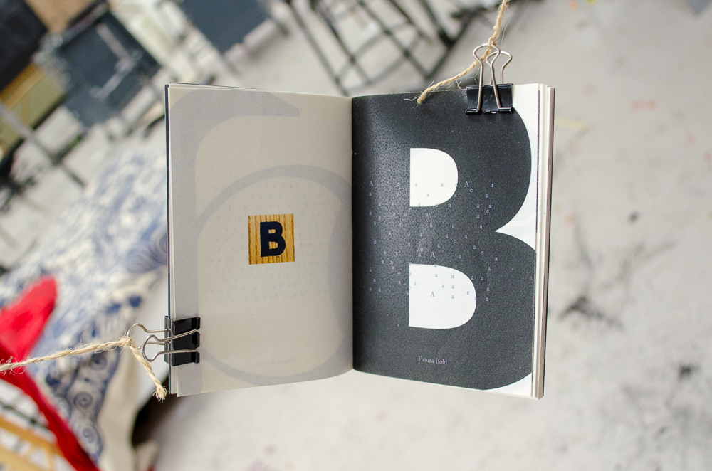

Vowels and Consonants
This book is a collection of handmade and digital letterforms, gathered during my life and travels. Each pair of letters of the Latin alphabet relates to one another visually. I have included with them excerpts from Eunoia by Christian Bök, an anthology of univocalics (each chapter is written using words limited to a single vowel). On each spread farther from the main text, the vowels are pulled out and disappear gradually.
The body is typeset in Adobe Caslon, and the other typefaces are credited on each page. I designed, printed, and bound this work in an edition of 15 in 2017.

